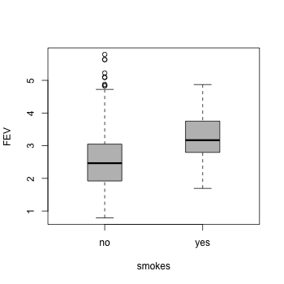

Conditional Visualisation for
Statistical Models
The FEV data in Kahn (2005) is a good jumping off point for discussing conditional relationships in statistical models. The data concern the relationship between lung health and smoking in children.
The response is Forced Expiratory Volume (FEV, the volume of air an individual can exhale in the first second of a forceful breath, used as a proxy for lung health) and the predictors are gender (binary), age (integer), height (inches, numeric) and smoking status (binary).
If we visualise the marginal relationship of FEV with smoking, we see something surprising...
It looks as though smoking is related with higher FEV values! Of course, something must be fishy here — and many of you will have already guessed that the marginal view is masking something else going on with the data.
So, let's fit a model and use condvis to see what's going on.
(We'll just fit a support vector machine with radial kernel and
default settings using e1071.) We can call ceplot
and get right into visualising slices of data space, and you can try
it out yourself with the Shiny application below.
Try clicking on the scatterplot for height = 70 and age = 14. Now set the gender to male on the barplot. This seems like a more sensible picture. The model here suggests a small decrease in FEV for smokers versus non-smokers, and the observed data nearby would seem to support this.
Now try clicking on the scatterplot for height = 55, age = 8 and gender = female. We seem to be getting the odd suggestion that expected FEV is higher for smokers versus non-smokers, just like the marginal view above! This time, we can see clearly what's going on however. We're asking the model to make a prediction for the FEV of 8 year old smokers... but we haven't observed any data in this part of the predictor space. This is hardly surprising; it might be rather difficult to get ethical approval for such an experimental design!
So, what we're getting here is a prediction based mostly on model assumptions (local smoothness) rather than observed data. This problem is commonly associated with more rigid models, involving more model assumptions. For example, the least squares fit of multiple linear regression is not necessarily a good fit if the assumption of linear effects is invalid. As we've seen here, a similar problem can arise in more flexible models too, where something like overfitting might seem like a more pressing concern!